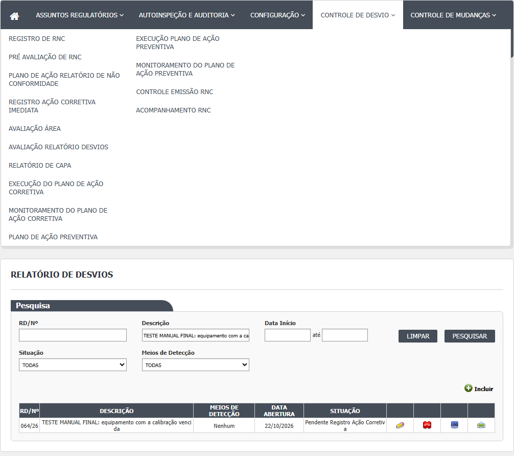
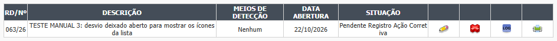
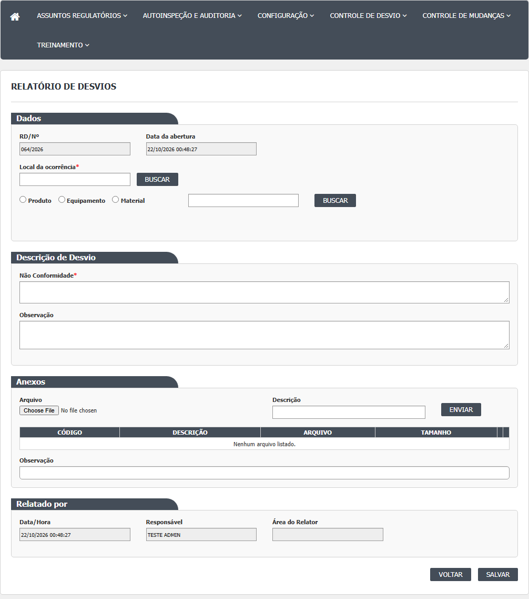
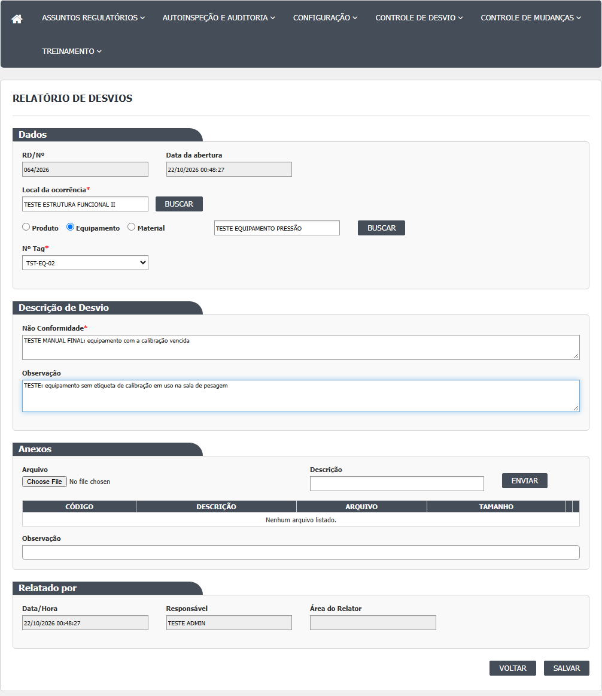
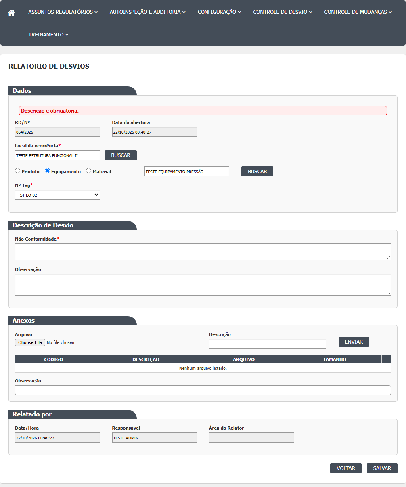
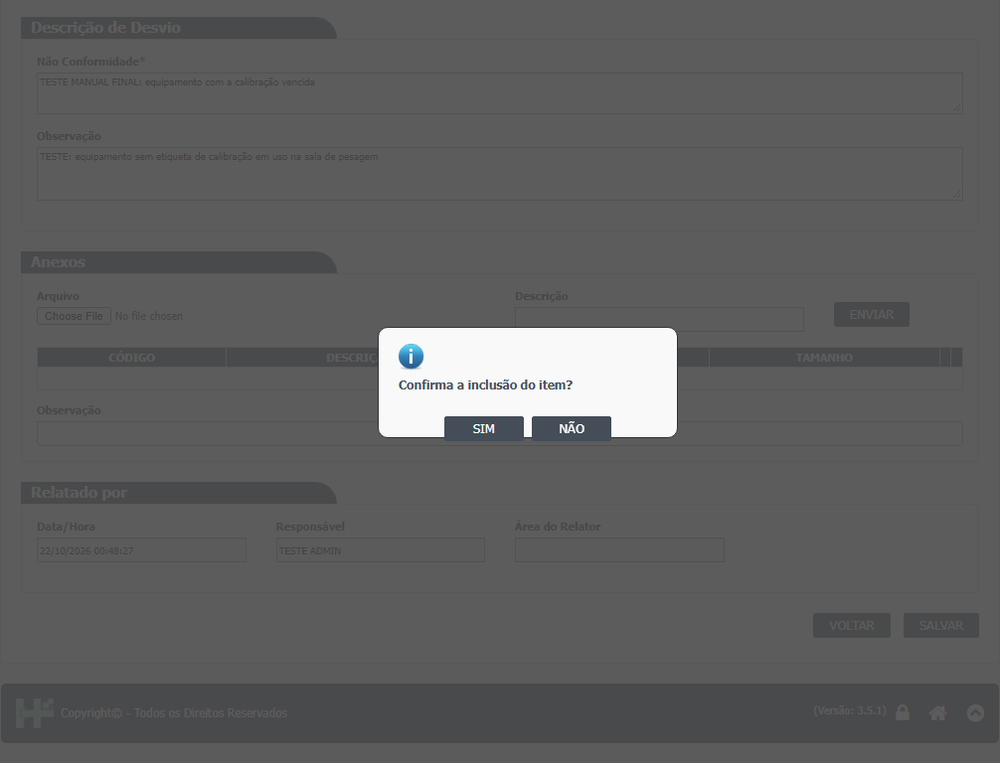
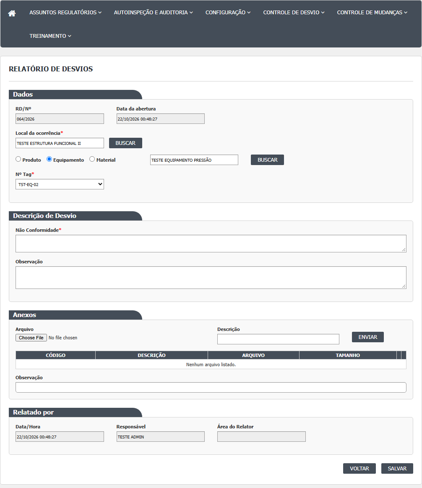
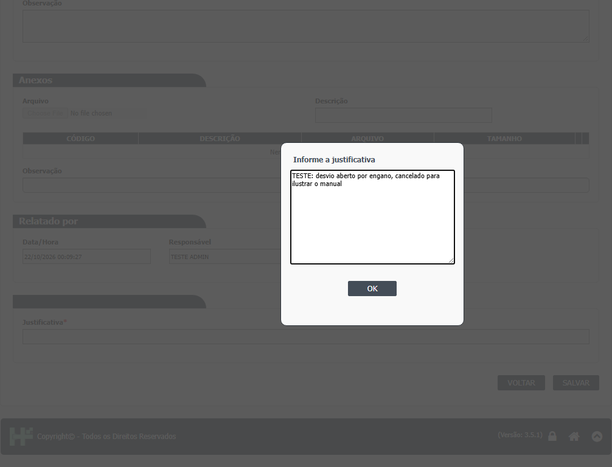
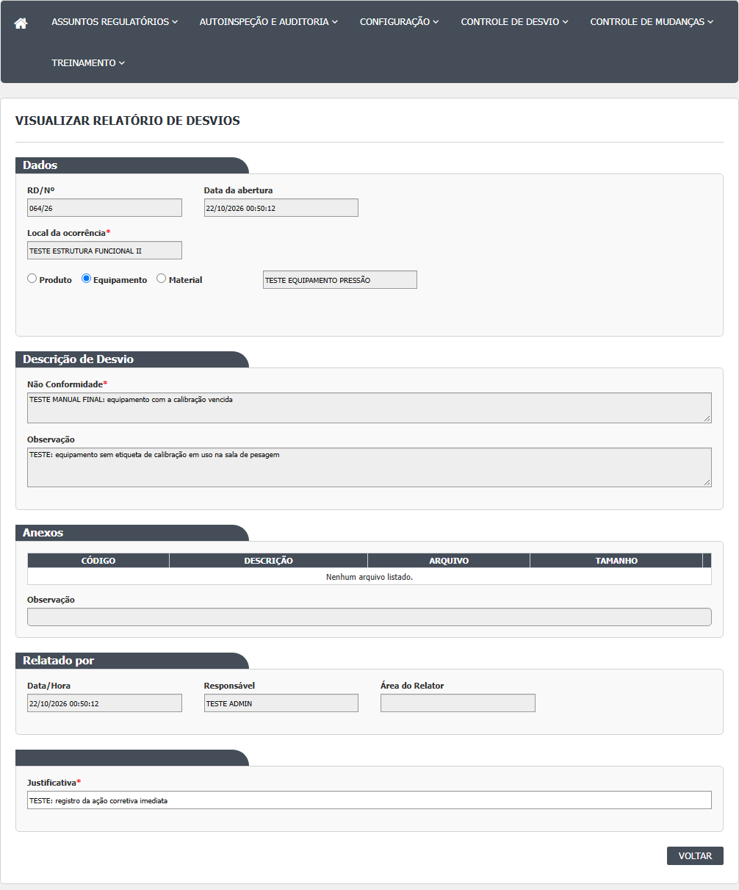
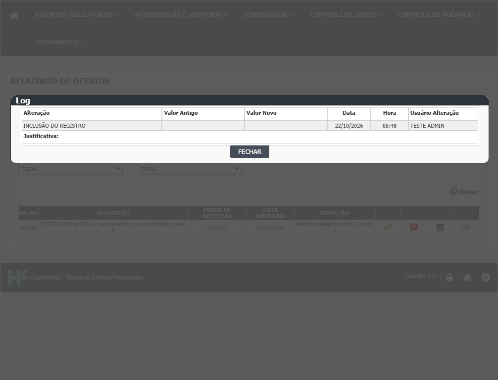

A lista (tela inicial)
- Passo 1. No menu, abra Controle de Desvios › Relatório de Desvios. A tela mostra o quadro "Pesquisa" com os filtros e, abaixo, o botão Incluir (se o seu usuário tem acesso) e o espaço da lista. A lista começa vazia: ela só aparece depois de clicar em Pesquisar (HSolutions.GQ.UI/Areas/Bloco2/Script/RegistroNaoConformidadeIndex.js:9-11).
- Passo 2. Preencha os filtros que quiser, todos opcionais: RD/Nº (formato 000/00), Descrição (parte do texto), Data Início e Data Fim (dd/mm/aaaa, com calendário), Situação e Meios de Detecção. Clique em Pesquisar.
- Passo 3. A lista mostra as colunas RD/Nº, DESCRIÇÃO, MEIOS DE DETECÇÃO, DATA ABERTURA e SITUAÇÃO, mais os ícones de cada linha. Um desvio recém-aberto mostra "Nenhum" em Meios de Detecção, porque esse dado só é preenchido na Pré Avaliação. Os títulos das colunas parecem links, mas clicar neles não reordena a lista (confirmado em 21/10/2026, DV-GQ-032). Atenção: se a descrição de algum desvio tiver apóstrofo, a lista inteira pode ficar vazia e a paginação trava (confirmado em 21/10/2026, DV-GQ-017).
- Passo 4. Sem resultado, aparece "A pesquisa não retornou nenhum resultado." A lista é paginada; no código, a página tem 3 registros (HSolutions.GQ.UI/Web.config:33), e o ambiente pode usar outro valor. Confirmado em 21/10/2026: o sistema mostrou 3 desvios por página (59 RDs em 20 páginas), com o paginador "« n n+1 »".
- Passo 5. Limpar apaga os campos de filtro, mas, nesta tela, não esvazia a lista já mostrada (o script limpa um espaço chamado divGrid e a lista fica em divGridRegistroNaoConformidade: HSolutions.GQ.UI/Areas/Bloco2/Script/RegistroNaoConformidadeIndex.js:88 e HSolutions.GQ.UI/Areas/Bloco2/Views/RegistroNaoConformidade/Index.cshtml:95). A confirmar no teste.


Ícones de cada linha
- Lápis (Editar): só aparece para desvios em Pendente Registro Ação Corretiva e para quem pode editar (criador do RD, GQ, ou responsável da mesma área do criador).
- Lupa (Visualizar): aparece no lugar do lápis quando o usuário não pode editar (HSolutions.GQ.UI/Scripts/HSGridApi.js:269-277).
- Lixeira com o título "Cancelar": mesmas condições do lápis.
- Histórico (Log): mostra todas as alterações gravadas do desvio.
- Impressora (Imprimir): abre o relatório do RD; só para RDs que já têm número. Em 21/10/2026 a impressão do RD deu página de erro ("Server Error ... The device is not ready") em todos os RDs testados (DV-GQ-018); a confirmar se o problema é do ambiente.
Incluir um desvio
- Passo 1. Na lista, clique em Incluir. Abre a tela "Relatório de Desvios". O número do RD já aparece (por exemplo 007/2026) e é só de consulta: o número definitivo é calculado de novo ao salvar.
- Passo 2. Quadro "Dados". Em Local da ocorrência, digite pelo menos 3 letras e clique em buscar; escolha o local na janela "Locais". O local precisa ser escolhido na janela, não basta digitar.
- Passo 3. Escolha o tipo do item: Produto, Equipamento ou Material. Digite pelo menos 3 letras do item e clique em buscar; escolha na janela "Itens". Na rodada de 21/10/2026, só a busca de Equipamento devolveu itens: a de Produto abre a janela vazia, sem mensagem, e a de Material mostra "Ocorreu um erro interno não esperado." (DV-GQ-010). Por isso não foi possível ligar um lote ao desvio.
- Passo 4. Para Produto ou Material, aparece o campo Nº Lote (e, se o lote tiver mais de um registro de entrada, Registro de entrada). Escolha e clique em Adicionar: o lote entra na grade abaixo, com ícone de excluir. Para Equipamento, aparece só o Nº Tag, preenchido sozinho.
- Passo 5. Quadro "Descrição de Desvio". Em "Não Conformidade", descreva o que aconteceu (obrigatório). Em Observação, acrescente o que for útil (opcional).
- Passo 6. Quadro "Anexos". Escolha o arquivo, digite a descrição e clique em Enviar. Aparece "Arquivo enviado com sucesso." e o anexo entra na grade (com ícones de excluir e de abrir). O campo Observação abaixo da grade é livre.
- Passo 7. Quadro "Relatado por": Data/Hora, Responsável e Área do Relator aparecem preenchidos e travados.
- Passo 8. Clique em Salvar. O sistema pergunta "Confirma a inclusão do item?". Responda SIM. Se faltar algo obrigatório, aparece uma faixa vermelha no alto do quadro Dados (ou do quadro Anexos) com o motivo. Se faltar mais de um campo, aparece uma mensagem só por tentativa (por exemplo, só "Local de Ocorrência é obrigatório."); corrija e salve de novo para ver a outra (confirmado em 21/10/2026, DV-GQ-033). Se der certo, aparece "Inclusão efetuada com sucesso." e a tela volta para a lista.
- Passo 9. Voltar sai da tela sem salvar.





Editar um desvio
- Passo 1. Na lista, clique no lápis de um desvio em Pendente Registro Ação Corretiva. Abre "Editar Relatório de Desvios", com os mesmos quadros do Incluir, já preenchidos, e um campo a mais no fim: Justificativa.
- Passo 2. Altere o que for preciso. O campo Justificativa vem preenchido com a justificativa da última edição; é obrigatório e deve ser atualizado.
- Passo 3. Clique em Salvar e responda SIM. Aparece "Alteração efetuada com sucesso." O desvio continua em Pendente Registro Ação Corretiva. A alteração vai para o histórico, com valor antigo, valor novo, usuário e justificativa. Confirmado em 21/10/2026: sem justificativa aparece "Justificativa é obrigatória."; com ela, o histórico mostra o valor antigo e o novo da descrição, a hora, o usuário e a justificativa.
Cancelar um desvio
- Passo 1. Na lista, clique na lixeira (título "Cancelar") de um desvio em Pendente Registro Ação Corretiva. Abre "Cancelar Relatório de Desvios", com todos os campos travados.
- Passo 2. Clique em Salvar (nesta tela o botão que confirma o cancelamento se chama Salvar). O sistema pergunta "Confirmar o cancelamento do item?". Responda SIM.
- Passo 3. Abre uma janela com a mensagem "Informe a justificativa" e uma caixa de texto. Escreva o motivo e clique em OK. Sem texto, aparece "A justificativa é obrigatória!".
- Passo 4. Aparece "Cancelamento efetuado com sucesso." O desvio passa a Cancelado. O motivo, quem cancelou e quando ficam gravados no próprio desvio, mas o cancelamento não entra no histórico (defeito DV-GQ-001, confirmado em teste).

Visualizar um desvio
- Passo 1. Na lista, clique na lupa. Abre "Visualizar Relatório de Desvios": todos os campos travados, sem botão Salvar, sem ícone de excluir anexo e sem a área de envio de arquivo. Só é possível abrir os anexos e voltar.

Histórico e impressão
- Histórico: clique no ícone de histórico. A janela "Log de Alteração" mostra, para cada alteração, o campo, o valor antigo, o valor novo, data, hora, usuário e justificativa. A inclusão aparece só como "INCLUSÃO DO REGISTRO". Em um desvio editado muitas vezes (25 entradas), o histórico abre em páginas, do mais novo para o mais antigo, mas não registra o texto da ação imediata, as observações das áreas, as áreas envolvidas, as causas do diagrama nem o conteúdo dos resultados (confirmado em 21/10/2026, DV-GQ-036).
- Imprimir: clique no ícone da impressora. O relatório do RD deveria abrir em outra janela; em 21/10/2026 abriu uma página de erro (DV-GQ-018).

Rodada 2 (22/10/2026)
Fonte: execucao/2026-10-22-desvios-rodada-2/resultado.md. Só o que a rodada mostrou de novo.
- Incluir, salvar sem item. Salvar sem escolher tipo de item, item nem lote foi aceito: apareceu "Inclusão efetuada com sucesso." e o desvio entrou na lista (CT-GQ-N01-008). Nada no manual precisa mudar, mas vale o aviso: a tela não obriga a ligar o desvio a um item.
- Duas datas para o mesmo desvio. Depois de salvar, a coluna DATA ABERTURA da lista mostra a data gravada. Ao abrir o desvio de novo (Editar ou Visualizar), o campo Data da abertura mostra a data e a hora de agora (CT-GQ-N01-013; RN-GQ-D01-014 e RN-GQ-D01-024).
- Cancelar. O cancelamento continua sem entrar no histórico (resultado de 21/10/2026, citado em 22/10/2026 no CT-GQ-006; DV-GQ-001).
- Quem pode editar ou cancelar. As regras de acesso estão no documento interno.
Rodada 3 (22/10/2026)
Fonte: execucao/2026-10-22-desvios-rodada-3a/resultado.md. Só o que a rodada mostrou de novo ou contrariou.
- Incluir, campos faltando. Salvar com tudo vazio mostra só "Local de Ocorrência é obrigatório."; a descrição não é cobrada junto (CT-GQ-N01-001; DV-GQ-033). Só com a descrição: "Local de Ocorrência é obrigatório." Local escolhido pela janela e descrição vazia: "Descrição é obrigatória." Nome do local digitado sem usar a busca: "Local de Ocorrência é obrigatório." e nada é gravado (CT-GQ-N01-002 a 004).
- Incluir, descrição só com um espaço. A tela mostra "Inclusão efetuada com sucesso." e o desvio (074/26) aparece na lista com a descrição em branco (CT-GQ-N01-029; DV-GQ-051). O manual diz que a descrição é obrigatória: um espaço passa.
- Equipamento e TAG. Ao escolher o equipamento, o Nº Tag aparece e é gravado; ao abrir o Editar ele volta. Na tela Visualizar o campo Nº Tag não existe (desvio 078/26; CT-GQ-N01-007; DV-GQ-056). O passo "Visualizar um desvio" não deve prometer a TAG.
- Item e relatório impresso. O item aparece só como texto (o nome do equipamento); o código do item não aparece (CT-GQ-N01-010). O relatório impresso do RD não abre (página de erro do servidor, CT-GQ-N01-027; DV-GQ-018), então a conferência do relatório impresso não foi feita.
- Anexos. Enviar sem nada: "Nenhuma informação foi enviada. O arquivo não foi informado. A descrição não foi informada." Arquivo sem descrição: "A descrição não foi informada." Os dois: "Arquivo enviado com sucesso." Na edição, excluir o anexo, informar a justificativa e salvar dá "Alteração efetuada com sucesso."; o histórico traz "Exclusão de anexo" com o nome do arquivo e a justificativa (CT-GQ-N01-011 e N01-012).
- Editar. Sem justificativa: "Justificativa é obrigatória." e nada é gravado (CT-GQ-N01-016). Mudar só o texto da justificativa: "Alteração efetuada com sucesso.", mas o histórico fica igual, sem a justificativa nova (CT-GQ-N01-017; DV-GQ-053). Mudar a descrição: o desvio continua em Pendente Registro Ação Corretiva e o histórico mostra a descrição (valor antigo e novo) e "Responsável" de quem criou para quem editou (CT-GQ-N01-018). Trocar o tipo de item faz o botão Salvar sumir; ele continua escondido ao voltar ao tipo anterior e só volta quando se escolhe um item na busca (CT-GQ-N01-031).
- Data da abertura. Em Editar e em Visualizar o campo mostra a data e a hora de agora, e não a data do desvio. Exemplo: o desvio 015/26, aberto em 21/10/2026 como diz a lista, mostrou 22/10/2026 13:55:08 (CT-GQ-N01-015; DV-GQ-052).
- Cancelar. SIM em "Confirmar o cancelamento do item?", justificativa em "Informe a justificativa" e "Cancelamento efetuado com sucesso." Na lista o desvio fica Cancelado, só com lupa, histórico e impressora. O histórico traz só a inclusão: o cancelamento continua fora (CT-GQ-N01-021 e N01-028; DV-GQ-001).
- Lista, filtros. Por RD/Nº, por parte da descrição, por situação (Cancelado: 9 desvios) e por meio de detecção (Garantia da Qualidade: 26 desvios) só vêm os que combinam (CT-GQ-N01-022). Datas (CT-GQ-N01-023): só Data Início 21/10 traz 48 desvios, todos de 21/10; Início 21/10 e Fim 21/10 traz os mesmos 48; Início 20/10 e Fim 21/10 também os mesmos 48, ou seja, o dia seguinte ao fim não entra; só Data Fim é ignorada (85 desvios, todos).
- Quem pode editar ou cancelar. As regras de acesso estão no documento interno.
Rodada 4 (22/10/2026)
Fonte: execucao/2026-10-22-desvios-rodada-4/resultado.md. Só o que a rodada mostrou de novo ou contrariou.
- Incluir, buscas. Digitar só duas letras em Local e buscar mostra "Local ocorrência: digite no minímo 3 caracteres."; o mesmo em Item mostra "Item: digite no minímo 3 caracteres." (CT-GQ-N01-005).
- Tipo de item. Só há três opções: Produto, Equipamento e Material (CT-GQ-N01-006).
- Texto longo. A Não Conformidade aceita 5.000 caracteres e os grava inteiros (CT-GQ-N01-030).
- Cancelar. Responder SIM e clicar OK sem escrever a justificativa mostra "A justificativa é obrigatória!". Responder NÃO não muda nada (CT-GQ-N01-019 e N01-020).
- Lista. Limpar esvazia os filtros, mas a lista continua mostrando as linhas. São 3 desvios por página (CT-GQ-N01-024 e N01-025). Dois desvios incluídos em seguida recebem números consecutivos (CT-GQ-N01-014).
- Visualizar (lupa). A tela não tem Salvar nem excluir anexo, mas o tipo de item e a Justificativa aparecem editáveis. Nada do que se digita ali é gravado (não há Salvar) (CT-GQ-N01-026).
Campos da tela
Observação: o servidor só recusa o que está listado como obrigatório na coluna "Obrigatório" com a marca "servidor". As marcações de asterisco na tela que não têm regra no servidor estão indicadas como "só na tela".
Lista (filtros e colunas)
| Campo na tela | Tipo | Obrigatório | Regra, limite ou valores possíveis | Fonte (arquivo:linha) |
|---|---|---|---|---|
| RD/Nº | Texto com máscara 000/00 | Não | Procura o número (contém) e, se houver "/aa", o ano 20aa. Exemplo: 003/26. Confirmado em 21/10/2026 (casos CT-GQ-F05 e F16): acha com o número puro e com número e ano. | HSolutions.GQ.UI/Areas/Bloco2/Views/RegistroNaoConformidade/Index.cshtml:29-30; HSolutions.GQ.UI/Areas/Bloco2/Script/RegistroNaoConformidadeIndex.js:6; HSolutions.GQ.UI/Areas/Bloco2/Controllers/RegistroNaoConformidadeController.cs:75-85 |
| Descrição | Texto | Não | Procura por parte do texto | HSolutions.GQ.UI/Areas/Bloco2/Views/RegistroNaoConformidade/Index.cshtml:34-35; HSolutions.GQ.UI/Areas/Bloco2/Controllers/RegistroNaoConformidadeController.cs:87-88 |
| Data Início | Data dd/mm/aaaa, com calendário e máscara | Não | Sozinha, filtra só aquele dia (do dia até o dia seguinte). Com Data Fim, filtra o período, incluindo o dia seguinte ao fim. Confirmado em 21/10/2026 (caso CT-GQ-F07): sozinha filtra só aquele dia. Uma data inválida (31/02/2026) é ignorada em silêncio, sem mensagem, e a lista sai completa (DV-GQ-027). | HSolutions.GQ.UI/Areas/Bloco2/Views/RegistroNaoConformidade/Index.cshtml:39-41; HSolutions.GQ.UI/Areas/Bloco2/Script/RegistroNaoConformidadeIndex.js:2-3; HSolutions.GQ.UI/Areas/Bloco2/Controllers/RegistroNaoConformidadeController.cs:90-102 |
| Data Fim | Data dd/mm/aaaa, com calendário e máscara | Não | Sozinha (sem Data Início) é ignorada. Confirmado em 21/10/2026 (caso CT-GQ-F08): sozinha é ignorada; com a mesma data do início, devolve o dia. | HSolutions.GQ.UI/Areas/Bloco2/Views/RegistroNaoConformidade/Index.cshtml:44-45; HSolutions.GQ.UI/Areas/Bloco2/Controllers/RegistroNaoConformidadeController.cs:90-102 |
| Situação | Lista | Não | TODAS (padrão); Cancelado; Finalizado; Pendente Avaliação Plano Ação; Pendente Plano Ação Corretiva; Pendente Avaliação Relatório de Desvios; Pendente Monitoramento do Plano Ação Preventiva; Pendente Monitoramento do Plano Ação Corretiva; Pendente Registro Ação Corretiva; Pendente Pré Avaliação; Pendente Responsável Área; Pendente Relatório de CAPA. Não há opção para Finalizado sem Relatório CAPA, Aprovado Plano Ação Corretiva nem Reprovado Plano Ação Corretiva (só aparecem em TODAS). Em 21/10/2026 as contagens por situação conferiram com a massa; "Pendente Avaliação Plano Ação" devolveu 0 (DV-GQ-028). | HSolutions.GQ.UI/Areas/Bloco2/Models/RegistroNaoConformidadeIndexModel.cs:24-58; HSolutions.GQ.Domain/Enumeradores/TipoSituacao.cs:5-76 |
| Meios de Detecção | Lista | Não | TODAS (padrão); Processo/Produção; Auditoria Interna; Inspeção Sanitária; Controle da Qualidade; Garantia da Qualidade; SAC/Fármaco; Outros | HSolutions.GQ.UI/Areas/Bloco2/Models/RegistroNaoConformidadeIndexModel.cs:60-82; HSolutions.GQ.Domain/Enumeradores/TipoMetodoDeteccaoNaoConformidade.cs:10-28 |
| Coluna RD/Nº | Texto (resultado) | Não | Número no formato nnn/aa. Sem número, fica vazio. Confirmado em 21/10/2026: a lista mostra nnn/aa, enquanto a tela Incluir mostra nnn/AAAA. | HSolutions.GQ.UI/Areas/Bloco2/Models/RegistroNaoConformidadeIndexResultadoModel.cs:45; HSolutions.GQ.Domain/Entities/Bloco2/ControleDesvios/RegistroNaoConformidade.cs:16-35 |
| Coluna DESCRIÇÃO | Texto (resultado) | Não | Descrição do desvio | HSolutions.GQ.UI/Areas/Bloco2/Script/RegistroNaoConformidadeIndex.js:26 |
| Coluna MEIOS DE DETECÇÃO | Texto (resultado) | Não | Fica "Nenhum" até a Pré Avaliação | HSolutions.GQ.UI/Areas/Bloco2/Models/RegistroNaoConformidadeIndexResultadoModel.cs:49 |
| Coluna DATA ABERTURA | Data dd/MM/aaaa (resultado) | Não | Data de criação do registro | HSolutions.GQ.UI/Areas/Bloco2/Models/RegistroNaoConformidadeIndexResultadoModel.cs:23-31 |
| Coluna SITUAÇÃO | Texto (resultado) | Não | Descrição da situação atual | HSolutions.GQ.UI/Areas/Bloco2/Models/RegistroNaoConformidadeIndexResultadoModel.cs:48 |
Formulário: quadro Dados (Incluir, Editar, Visualizar e Cancelar)
| Campo na tela | Tipo | Obrigatório | Regra, limite ou valores possíveis | Fonte (arquivo:linha) |
|---|---|---|---|---|
| RD/Nº | Texto travado | Preenchido sozinho | Incluir mostra nnn/AAAA (ano com 4 dígitos); Editar, Visualizar e Cancelar mostram nnn/aa (ano com 2 dígitos) | HSolutions.GQ.UI/Areas/Bloco2/Views/Shared/_PartialRelatorioDesvio.cshtml:91-92; HSolutions.GQ.UI/Areas/Bloco2/Controllers/RegistroNaoConformidadeController.cs:148; HSolutions.GQ.UI/Areas/Bloco2/Models/PartialRelatorioDesvioModel.cs:190 |
| Data da abertura | Texto travado | Preenchido sozinho | Mostra a data e hora do momento em que a tela abriu (inclusive em Editar, Visualizar e Cancelar). Este campo não é enviado ao salvar | HSolutions.GQ.UI/Areas/Bloco2/Views/Shared/_PartialRelatorioDesvio.cshtml:95-96; HSolutions.GQ.UI/Areas/Bloco2/Models/PartialRelatorioDesvioModel.cs:138 |
| Local da ocorrência | Texto livre mais botão buscar | Sim (tela e servidor) | Busca com no mínimo 3 caracteres; o servidor exige o código do local escolhido na janela (código diferente de zero). O texto da caixa pode ser digitado à mão e é gravado como nome do local, mesmo diferente do local escolhido | HSolutions.GQ.UI/Areas/Bloco2/Views/Shared/_PartialRelatorioDesvio.cshtml:102-106; HSolutions.GQ.UI/Areas/Bloco2/Script/PartialRelatorioDesvio.js:587-602, 630-640; HSolutions.GQ.Domain/Service/RelatorioNaoConformidadeValidator.cs:30-34 |
| Botão buscar (local) | Botão | Não | Abre a janela "Locais" com as colunas CÓDIGO e LOCAL e o botão FECHAR | HSolutions.GQ.UI/Areas/Bloco2/Views/Shared/_PartialRelatorioDesvio.cshtml:106, 867-876 |
| Tipo do item | Botões de opção (rádio) | Não (sem regra no servidor) | Produto (4), Equipamento (6) e Material (13). O enumerador tem 14 tipos, mas a tela oferece só estes 3. Nenhum vem marcado no Incluir | HSolutions.GQ.UI/Areas/Bloco2/Views/Shared/_PartialRelatorioDesvio.cshtml:112-127; HSolutions.GQ.UI/Areas/Bloco2/Models/PartialRelatorioDesvioModel.cs:145-158; HSolutions.GQ.Domain/Enumeradores/TipoItem.cs:10-42 |
| Item | Texto livre mais botão buscar | Não (sem regra no servidor) | Busca com no mínimo 3 caracteres, no serviço conforme o tipo (Produto: Produção; Material: Estoque; Equipamento: Principal). Em 21/10/2026 só a busca de Equipamento devolveu itens; Produto abre a janela vazia e Material mostra erro (DV-GQ-010). | HSolutions.GQ.UI/Areas/Bloco2/Views/Shared/_PartialRelatorioDesvio.cshtml:130-134; HSolutions.GQ.UI/Areas/Bloco2/Script/PartialRelatorioDesvio.js:691-708; HSolutions.GQ.UI/Areas/Bloco2/Controllers/RegistroNaoConformidadeController.cs:644-705 |
| Janela "Itens" | Grade | Não | Colunas CÓDIGO e ITEM, com FECHAR | HSolutions.GQ.UI/Areas/Bloco2/Views/Shared/_PartialRelatorioDesvio.cshtml:879-888; HSolutions.GQ.UI/Areas/Bloco2/Script/PartialRelatorioDesvio.js:712-738 |
| Nº Lote | Lista | Marcado com asterisco só na tela (Produto e Material) | Mostra "SELECIONE" e os lotes do item; aparece só para Produto e Material | HSolutions.GQ.UI/Areas/Bloco2/Views/Shared/_PartialRelatorioDesvio.cshtml:142-148; HSolutions.GQ.UI/Areas/Bloco2/Script/PartialRelatorioDesvio.js:753-762 |
| Nº Tag | Lista | Marcado com asterisco só na tela (Equipamento) | Mostra a TAG do equipamento; aparece só para Equipamento. A TAG não é gravada; é buscada de novo pelo nome do item cada vez que a tela abre | HSolutions.GQ.UI/Areas/Bloco2/Views/Shared/_PartialRelatorioDesvio.cshtml:150-156; HSolutions.GQ.UI/Areas/Bloco2/Controllers/ServiceBloco2.cs:53-71 |
| Registro de entrada | Lista | Marcado com asterisco só na tela | Aparece só se o lote tiver mais de um registro de entrada | HSolutions.GQ.UI/Areas/Bloco2/Views/Shared/_PartialRelatorioDesvio.cshtml:159-165; HSolutions.GQ.UI/Areas/Bloco2/Script/PartialRelatorioDesvio.js:822-828 |
| Adicionar | Botão | Não | Põe o lote na grade. Um mesmo número de lote não entra duas vezes | HSolutions.GQ.UI/Areas/Bloco2/Views/Shared/_PartialRelatorioDesvio.cshtml:169; HSolutions.GQ.UI/Areas/Bloco2/Script/PartialRelatorioDesvio.js:847-877 |
| Grade de lotes | Grade | Não | Colunas LOTE e Nº LOTE, com ícone Excluir (marca o lote como removido) | HSolutions.GQ.UI/Areas/Bloco2/Script/PartialRelatorioDesvio.js:879-912 |
Formulário: quadros Descrição de Desvio e Anexos
| Campo na tela | Tipo | Obrigatório | Regra, limite ou valores possíveis | Fonte (arquivo:linha) |
|---|---|---|---|---|
| Não Conformidade | Texto longo (3 linhas) | Sim (tela e servidor) | Gravado como a descrição do desvio. O servidor só recusa texto vazio; um espaço em branco passa (IsNullOrEmpty). Sem limite de tamanho no código; coluna NVARCHAR(MAX) | HSolutions.GQ.UI/Areas/Bloco2/Views/Shared/_PartialRelatorioDesvio.cshtml:191-192; HSolutions.GQ.Domain/Service/RelatorioNaoConformidadeValidator.cs:24-28; Hsolutions.GQ.DB/Tables/TBL_REGISTRO_RNC.sql (coluna Descricao) |
| Observação do desvio | Texto longo (4 linhas) | Não | Livre | HSolutions.GQ.UI/Areas/Bloco2/Views/Shared/_PartialRelatorioDesvio.cshtml:198-199 |
| Arquivo | Seleção de arquivo | Sim, para enviar | Sem lista de tipos e sem limite de tamanho; o nome original do arquivo é usado. Mensagem se faltar: "O arquivo não foi informado." | HSolutions.GQ.UI/Views/Shared/_UploadArquivo.cshtml:75-76; HSolutions.GQ.UI/Controllers/UploadController.cs:55-60, 128 |
| Descrição (do anexo) | Texto | Sim, para enviar | Mensagem se faltar: "A descrição não foi informada." | HSolutions.GQ.UI/Views/Shared/_UploadArquivo.cshtml:80-83; HSolutions.GQ.UI/Controllers/UploadController.cs:129 |
| Enviar | Botão | Não | Grava o arquivo na hora, antes de salvar o desvio | HSolutions.GQ.UI/Views/Shared/_UploadArquivo.cshtml:87-88; HSolutions.GQ.UI/Controllers/AnexoController.cs:20-47 |
| Grade de anexos | Grade | Não | Colunas CÓDIGO, DESCRIÇÃO, ARQUIVO e TAMANHO, com ícones Excluir e Abrir. Vazia: "Nenhum arquivo listado." | HSolutions.GQ.UI/Views/Shared/_GridAnexos.cshtml:3-67 |
| Observação (dos anexos) | Texto | Não | Livre | HSolutions.GQ.UI/Areas/Bloco2/Views/Shared/_PartialRelatorioDesvio.cshtml:231-232 |
Formulário: quadro Relatado por, Justificativa e botões
| Campo na tela | Tipo | Obrigatório | Regra, limite ou valores possíveis | Fonte (arquivo:linha) |
|---|---|---|---|---|
| Data/Hora | Texto travado | Preenchido sozinho | É este o campo enviado como data de abertura do desvio (a data vem da tela, não do servidor) | HSolutions.GQ.UI/Areas/Bloco2/Views/Shared/_PartialRelatorioDesvio.cshtml:244-245; HSolutions.GQ.UI/Areas/Bloco2/Script/PartialRelatorioDesvio.js:304; HSolutions.GQ.UI/Areas/Bloco2/Controllers/RegistroNaoConformidadeController.cs:208 |
| Responsável | Texto travado | Preenchido sozinho | Nome do usuário conectado no Incluir; o servidor usa o usuário conectado, não o campo | HSolutions.GQ.UI/Areas/Bloco2/Views/Shared/_PartialRelatorioDesvio.cshtml:249-250; HSolutions.GQ.UI/Areas/Bloco2/Controllers/RegistroNaoConformidadeController.cs:152, 216-219 |
| Área do Relator | Texto travado | Preenchido sozinho | Nome da área do usuário conectado | HSolutions.GQ.UI/Areas/Bloco2/Views/Shared/_PartialRelatorioDesvio.cshtml:254-255; HSolutions.GQ.UI/Areas/Bloco2/Controllers/RegistroNaoConformidadeController.cs:150-151 |
| Justificativa | Texto | Sim na edição (servidor); não existe no Incluir | Aparece só quando o desvio já existe. Vem preenchida com a justificativa anterior. Em Visualizar, o campo fica habilitado mesmo sem botão Salvar. Em Cancelar fica travado | HSolutions.GQ.UI/Areas/Bloco2/Views/Shared/_PartialRelatorioDesvio.cshtml:835-848; HSolutions.GQ.Domain/Service/RelatorioNaoConformidadeValidator.cs:36-43; HSolutions.GQ.UI/Areas/Bloco2/Views/Shared/_PartialRelatorioDesvio.cshtml:29; HSolutions.GQ.UI/Areas/Bloco2/Views/RegistroNaoConformidade/Cancelar.cshtml:32 |
| Justificativa do cancelamento | Texto longo (janela) | Sim | Janela "Informe a justificativa", com OK. Sem texto: "A justificativa é obrigatória!". O servidor também exige | HSolutions.GQ.UI/Views/Shared/_ModalJustificativa.cshtml:3-15, 20-42; HSolutions.GQ.Domain/Service/RelatorioNaoConformidadeValidator.cs:46-51 |
| Voltar | Botão | Não | Volta para a lista sem salvar | HSolutions.GQ.UI/Areas/Bloco2/Views/Shared/_PartialRelatorioDesvio.cshtml:854 |
| Salvar | Botão | Não | Não aparece em Visualizar. Em Cancelar, é ele que inicia o cancelamento | HSolutions.GQ.UI/Areas/Bloco2/Views/Shared/_PartialRelatorioDesvio.cshtml:855-858; HSolutions.GQ.UI/Areas/Bloco2/Script/PartialRelatorioDesvio.js:380-384 |
| Campos ocultos | Controle interno | Não | Id do desvio, id do local, situação atual, modo travado, modo cancelamento (hfId, hfIdLocalOcorrencia, hfSituacaoAtual, hfDisableFields, hfActionType e outros). O campo oculto do local usa o mesmo nome hfId do campo do desvio | HSolutions.GQ.UI/Areas/Bloco2/Views/Shared/_PartialRelatorioDesvio.cshtml:75-82 |
Rodada 2 (22/10/2026)
- Data da abertura e Data/Hora de Relatado por: na tela abrem travados. A coluna DATA ABERTURA da lista mostra a data gravada; o campo Data da abertura das telas Editar, Visualizar e Cancelar mostra a de agora (RN-GQ-D01-014, validada em 22/10/2026).
- Tipo do item, item e lote: ficam sem preenchimento sem recusa (RN-GQ-D01-006, reconfirmada em 22/10/2026).
Rodada 3 (22/10/2026)
- Não Conformidade. Um único espaço é aceito e o desvio é gravado com a descrição em branco (RN-GQ-D01-026; DV-GQ-051).
- Data da abertura (Editar e Visualizar). Mostra a data e a hora do momento em que a tela abre (RN-GQ-D01-014, reconfirmada; DV-GQ-052).
- Nº Tag. Aparece e grava ao escolher o equipamento e volta no Editar; não existe na tela Visualizar (RN-GQ-D01-025; DV-GQ-056).
- Anexo (arquivo e descrição). As mensagens de falta são as do envio ("O arquivo não foi informado." e "A descrição não foi informada."), antes de chegar à validação de "O Anexo é obrigatório." (RN-GQ-013).
- Data Início e Data Fim (lista). Contrariam o texto da linha "Data Início" acima: com Data Fim, a lista traz só até o dia informado; o dia seguinte ao fim não entra (RN-GQ-D01-028). Data Fim sozinha é ignorada, como já descrito.
Rodada 4 (22/10/2026)
Fonte: execucao/2026-10-22-desvios-rodada-4/resultado.md. Só o que a rodada mostrou de novo ou contrariou.
- Tipo de item: três botões de opção (Produto, Equipamento, Material). Na consulta pela lupa eles aparecem editáveis (CT-GQ-N01-006 e N01-026).
- Justificativa: na consulta pela lupa aparece editável (CT-GQ-N01-026).
- Não Conformidade: aceita 5.000 caracteres, sem limite (CT-GQ-N01-030).
- Número do RD: na tela Incluir aparece "086/2026" e, na lista, "086/26" (CT-GQ-N01-014).
Botões e ações
Lista
| Botão ou ação | Quando aparece | O que faz | Para onde leva o desvio | Fonte |
|---|---|---|---|---|
| Pesquisar | Sempre | Carrega a lista com os filtros informados, 3 por página no código | Não muda o desvio | HSolutions.GQ.UI/Areas/Bloco2/Views/RegistroNaoConformidade/Index.cshtml:51; HSolutions.GQ.UI/Areas/Bloco2/Controllers/RegistroNaoConformidadeController.cs:60-134 |
| Limpar | Sempre | Esvazia os filtros; não limpa a lista mostrada | Não muda o desvio | HSolutions.GQ.UI/Areas/Bloco2/Views/RegistroNaoConformidade/Index.cshtml:50; HSolutions.GQ.UI/Areas/Bloco2/Script/RegistroNaoConformidadeIndex.js:87-95 |
| Incluir | Quando o usuário tem acesso à tela | Abre a tela Incluir | Cria um desvio novo (Nenhum para Pendente Registro Ação Corretiva) | HSolutions.GQ.UI/Areas/Bloco2/Views/RegistroNaoConformidade/Index.cshtml:82-91; HSolutions.GQ.UI/Areas/Bloco2/Controllers/RegistroNaoConformidadeController.cs:51 |
| Editar (lápis) | Desvio em Pendente Registro Ação Corretiva, para o criador, para a GQ ou para o responsável da mesma área do criador | Abre a tela Editar | Continua em Pendente Registro Ação Corretiva | HSolutions.GQ.UI/Helpers/GerenciadorAcessoTelaRelatorioNaoConformidadeIndex.cs:13-34; HSolutions.GQ.UI/Scripts/HSGridApi.js:266-276 |
| Visualizar (lupa) | Quando Editar não aparece, em qualquer situação | Abre a tela Visualizar | Não muda | HSolutions.GQ.UI/Scripts/HSGridApi.js:277-290; HSolutions.GQ.UI/Areas/Bloco2/Script/RegistroNaoConformidadeIndex.js:101-103 |
| Cancelar (lixeira) | Mesmas condições do Editar | Abre a tela Cancelar | Cancelado (depois da confirmação e da justificativa) | HSolutions.GQ.UI/Helpers/GerenciadorAcessoTelaRelatorioNaoConformidadeIndex.cs:37-57; HSolutions.GQ.UI/Areas/Bloco2/Script/RegistroNaoConformidadeIndex.js:39-42, 97-99 |
| Histórico (Log) | Quando o usuário tem acesso | Abre a janela "Log de Alteração" | Não muda | HSolutions.GQ.UI/Scripts/HSGridApi.js:317-336; HSolutions.GQ.UI/Areas/Bloco2/Script/RegistroNaoConformidadeIndex.js:43-46 |
| Imprimir | Quando o desvio tem número de RD e o usuário tem acesso | Abre o relatório do RD em outra janela. Em 21/10/2026 abriu página de erro em vez do relatório (DV-GQ-018). | Não muda | HSolutions.GQ.UI/Helpers/GerenciadorAcessoTelaRelatorioNaoConformidadeIndex.cs:59-64; HSolutions.GQ.UI/Areas/Bloco2/Controllers/RegistroNaoConformidadeController.cs:603-629 |
Formulário (Incluir, Editar, Visualizar e Cancelar)
| Botão ou ação | Quando aparece | O que faz | Para onde leva o desvio | Fonte |
|---|---|---|---|---|
| buscar (local) | Incluir e Editar | Procura locais com 3 ou mais letras; o clique numa linha da janela escolhe o local | Não muda | HSolutions.GQ.UI/Areas/Bloco2/Script/PartialRelatorioDesvio.js:576-640 |
| buscar (item) | Incluir e Editar | Procura itens do tipo escolhido; ao trocar de tipo ou refazer a busca, os lotes já listados são marcados como removidos. Em 21/10/2026 só a busca de equipamento devolveu itens (DV-GQ-010). | Não muda | HSolutions.GQ.UI/Areas/Bloco2/Script/PartialRelatorioDesvio.js:642-710 |
| Adicionar (lote) | Depois de escolher um lote (e o registro, se pedido) | Põe o lote na grade | Não muda | HSolutions.GQ.UI/Areas/Bloco2/Script/PartialRelatorioDesvio.js:847-877 |
| Excluir (lote) | Incluir e Editar, em cada lote da grade | Marca o lote como removido | Não muda até salvar | HSolutions.GQ.UI/Areas/Bloco2/Script/PartialRelatorioDesvio.js:918-938 |
| Enviar (arquivo) | Incluir e Editar | Grava o arquivo e põe na grade de anexos | Não muda até salvar | HSolutions.GQ.UI/Views/Shared/_UploadArquivo.cshtml:87-88 |
| Excluir e Abrir (anexo) | Excluir só em Incluir e Editar; Abrir em todas | Excluir marca o anexo como removido; Abrir baixa o arquivo | Não muda até salvar | HSolutions.GQ.UI/Views/Shared/_GridAnexos.cshtml:51-60; HSolutions.GQ.UI/Areas/Bloco2/Views/RegistroNaoConformidade/Visualizar.cshtml:25-29 |
| Salvar (Incluir) | Desvio novo | Pergunta "Confirma a inclusão do item?"; valida; grava; gera o número; grava histórico "INCLUSÃO DO REGISTRO" | Pendente Registro Ação Corretiva | HSolutions.GQ.UI/Areas/Bloco2/Script/PartialRelatorioDesvio.js:377-378, 398-399; HSolutions.GQ.UI/Areas/Bloco2/Controllers/RegistroNaoConformidadeController.cs:196-335 |
| Salvar (Editar) | Desvio em Pendente Registro Ação Corretiva | Pergunta "Confirma a inclusão do item?" (o texto diz inclusão, mesmo na edição); valida (inclusive a justificativa); grava; histórico com valores antigo e novo | Pendente Registro Ação Corretiva | HSolutions.GQ.UI/Areas/Bloco2/Script/PartialRelatorioDesvio.js:377-378, 401; HSolutions.GQ.UI/Areas/Bloco2/Controllers/RegistroNaoConformidadeController.cs:340-492 |
| Salvar (Cancelar) | Tela Cancelar | Pergunta "Confirmar o cancelamento do item?" e, em seguida, pede a justificativa; grava Cancelado, quem, quando e o motivo no desvio; sem histórico | Cancelado | HSolutions.GQ.UI/Areas/Bloco2/Script/PartialRelatorioDesvio.js:380-384; HSolutions.GQ.UI/Areas/Bloco2/Controllers/RegistroNaoConformidadeController.cs:528-568 |
| Voltar | Sempre | Volta para a lista sem salvar | Não muda | HSolutions.GQ.UI/Areas/Bloco2/Script/PartialRelatorioDesvio.js:389-392 |
Rodada 2 (22/10/2026)
- Sem botão novo ou diferente nesta rodada. Foram usados Incluir, Salvar, SIM e a lista (CT-GQ-N01-008 e CT-GQ-N01-013).
Rodada 3 (22/10/2026)
- Salvar (Editar). A pergunta "Confirma a inclusão do item?" aparece também nas edições, como descrito (RN-GQ-D01-016, validada).
- Tipo do item (botões de opção). Trocar o tipo no Editar faz o botão Salvar sumir; volta só ao escolher um item na busca (RN-GQ-D01-027; CT-GQ-N01-031).
- Cancelar (lixeira) e Salvar na tela Cancelar. Confirmação, justificativa e sucesso como descrito; o desvio fica Cancelado e o histórico não registra o cancelamento (RN-GQ-017; DV-GQ-001).
- Imprimir. Abre outra janela com a página de erro do servidor, não o relatório do RD (CT-GQ-N01-027; DV-GQ-018 reconfirmado).
- Excluir anexo (Editar). Gera, no histórico, "Exclusão de anexo" com o nome do arquivo e a justificativa (RN-GQ-D01-029).
Rodada 4 (22/10/2026)
Fonte: execucao/2026-10-22-desvios-rodada-4/resultado.md. Só o que a rodada mostrou de novo ou contrariou.
- Limpar (lista): esvazia os filtros; a lista continua mostrando as 3 linhas (CT-GQ-N01-024).
- Paginação: 3 desvios por página, também na segunda página (CT-GQ-N01-025).
- Cancelar, janela de justificativa: OK sem texto mostra "A justificativa é obrigatória!"; NÃO fecha sem mudar nada (CT-GQ-N01-019 e N01-020).
- Lupa: sem Salvar e sem excluir anexo, mas com campos editáveis (CT-GQ-N01-026).
Mensagens do sistema
| Mensagem (texto exato do código) | Quando aparece | Fonte |
|---|---|---|
| Confirma a inclusão do item? | Ao clicar Salvar em Incluir e também em Editar | HSolutions.GQ.UI/Areas/Bloco2/Script/PartialRelatorioDesvio.js:377 |
| Confirmar o cancelamento do item? | Ao clicar Salvar na tela Cancelar | HSolutions.GQ.UI/Areas/Bloco2/Script/PartialRelatorioDesvio.js:381 |
| Informe a justificativa | Janela aberta depois da confirmação do cancelamento | HSolutions.GQ.UI/Views/Shared/_ModalJustificativa.cshtml:22 |
| A justificativa é obrigatória! | OK da janela de justificativa sem texto | HSolutions.GQ.UI/Views/Shared/_ModalJustificativa.cshtml:13 |
| Inclusão efetuada com sucesso. | Desvio incluído | HSolutions.GQ.UI/Controllers/GQControllerBase.cs:94; HSolutions.GQ.UI/Areas/Bloco2/Controllers/RegistroNaoConformidadeController.cs:314 |
| Alteração efetuada com sucesso. | Desvio editado | HSolutions.GQ.UI/Controllers/GQControllerBase.cs:95; HSolutions.GQ.UI/Areas/Bloco2/Controllers/RegistroNaoConformidadeController.cs:471 |
| Cancelamento efetuado com sucesso. | Desvio cancelado | HSolutions.GQ.UI/Controllers/GQControllerBase.cs:97; HSolutions.GQ.UI/Areas/Bloco2/Controllers/RegistroNaoConformidadeController.cs:549 |
| Descrição é obrigatória. | Salvar sem a Não Conformidade (confirmado em 21/10/2026; aparece sozinha, DV-GQ-033) | HSolutions.GQ.Domain/Service/RelatorioNaoConformidadeValidator.cs:26 |
| Local de Ocorrência é obrigatório. | Salvar sem o local escolhido na janela (confirmado em 21/10/2026; com descrição e local vazios, é a única que aparece, DV-GQ-033) | HSolutions.GQ.Domain/Service/RelatorioNaoConformidadeValidator.cs:32 |
| Justificativa é obrigatória. | Editar sem justificativa (confirmado em 21/10/2026, caso CT-GQ-004) | HSolutions.GQ.Domain/Service/RelatorioNaoConformidadeValidator.cs:40 |
| Justificativa é obrigatório, quando a situação é de cancelamento. | Cancelar sem justificativa que chegue ao servidor | HSolutions.GQ.Domain/Service/RelatorioNaoConformidadeValidator.cs:49 |
| O Anexo é obrigatório. | Anexo sem arquivo ou sem descrição (a mesma frase vale para os dois casos) | HSolutions.GQ.Domain/Service/RelatorioNaoConformidadeValidator.cs:58, 64 |
| A Data de criação é obrigatória. | Data de abertura vazia ou mínima. O código da tela não mostra esta mensagem (o nome do campo não está na lista de erros mostrados) | HSolutions.GQ.Domain/Service/RelatorioNaoConformidadeValidator.cs:72; HSolutions.GQ.UI/Areas/Bloco2/Script/PartialRelatorioDesvio.js:484 |
| O Responsavel é obrigatório. | Responsável vazio. Também não é mostrada pela tela | HSolutions.GQ.Domain/Service/RelatorioNaoConformidadeValidator.cs:78; HSolutions.GQ.UI/Areas/Bloco2/Script/PartialRelatorioDesvio.js:484 |
| Entidade de domínio não pode ser nula. | Registro inexistente na validação | HSolutions.GQ.Domain/Service/RelatorioNaoConformidadeValidator.cs:17 |
| Local ocorrência: digite no minímo 3 caracteres. | Buscar local com menos de 3 caracteres (o texto traz "minímo" com acento errado) | HSolutions.GQ.UI/Areas/Bloco2/Script/PartialRelatorioDesvio.js:600 |
| Item: digite no minímo 3 caracteres. | Buscar item com menos de 3 caracteres | HSolutions.GQ.UI/Areas/Bloco2/Script/PartialRelatorioDesvio.js:706 |
| Arquivo enviado com sucesso. | Anexo enviado | HSolutions.GQ.UI/Views/Shared/_UploadArquivo.cshtml:44 |
| Nenhuma informação foi enviada. | Enviar anexo sem nenhum arquivo selecionado | HSolutions.GQ.UI/Controllers/UploadController.cs:127 |
| O arquivo não foi informado. | Enviar anexo sem arquivo | HSolutions.GQ.UI/Controllers/UploadController.cs:128 |
| A descrição não foi informada. | Enviar anexo sem descrição | HSolutions.GQ.UI/Controllers/UploadController.cs:129 |
| Anexo não encontrado. | Excluir ou abrir um anexo que não está na lista da sessão | HSolutions.GQ.UI/Controllers/AnexoController.cs:89, 162 |
| Chave do anexo inválido. | Abrir anexo sem a chave | HSolutions.GQ.UI/Controllers/AnexoController.cs:157 |
| Arquivo não encontrado. | Abrir anexo cujo arquivo não está no disco do servidor | HSolutions.GQ.UI/Controllers/AnexoController.cs:167 |
| Nenhum arquivo listado. | Grade de anexos vazia | HSolutions.GQ.UI/Views/Shared/_GridAnexos.cshtml:28 |
| A pesquisa não retornou nenhum resultado. | Lista sem registros | HSolutions.GQ.UI/Scripts/HSGridApi.js:209, 625 |
| Ocorreu um erro inesperado. | Qualquer erro não previsto ao incluir, editar ou cancelar; também ao abrir Editar, Cancelar ou Visualizar de um RD inexistente (volta para a lista) | HSolutions.GQ.UI/Controllers/GQControllerBase.cs:93; HSolutions.GQ.UI/Areas/Bloco2/Controllers/RegistroNaoConformidadeController.cs:189, 332 |
| Ocorreu um erro interno não esperado. | Falha de comunicação do navegador com o servidor. Confirmado em 21/10/2026: também aparece ao buscar um material (DV-GQ-010). | HSolutions.GQ.UI/Scripts/HSApi.js:23 |
| Não foi possível obter os relatórios de não conformidades | Erro ao pesquisar a lista | HSolutions.GQ.UI/Areas/Bloco2/Controllers/RegistroNaoConformidadeController.cs:132 |
| Não foi possível imprimir o RNC | Erro ao gerar o relatório | HSolutions.GQ.UI/Areas/Bloco2/Controllers/RegistroNaoConformidadeController.cs:627 |
| Server Error ... The device is not ready (System.IO.IOException) | Página de erro ao imprimir o RD pelo ícone da impressora (observada em 21/10/2026, DV-GQ-018) | Texto vindo do servidor, fora do código analisado |
Rodada 2 (22/10/2026)
- "Inclusão efetuada com sucesso." foi vista ao salvar sem item e ao salvar o desvio do caso CT-GQ-N01-013, com o texto igual ao do código.
- Nenhuma mensagem nova ou diferente apareceu nesta tela.
Rodada 3 (22/10/2026)
- Vistas na tela com o texto igual ao do código: "Descrição é obrigatória.", "Local de Ocorrência é obrigatório.", "Justificativa é obrigatória.", "Inclusão efetuada com sucesso.", "Alteração efetuada com sucesso.", "Confirmar o cancelamento do item?", "Informe a justificativa", "Cancelamento efetuado com sucesso.", "Nenhuma informação foi enviada.", "O arquivo não foi informado.", "A descrição não foi informada." e "Arquivo enviado com sucesso."
- Ao salvar com descrição e local vazios, aparece só "Local de Ocorrência é obrigatório." (DV-GQ-033). "O Anexo é obrigatório." não apareceu, porque o envio do anexo recusa antes, com as mensagens do envio.
- Nenhuma mensagem nova ou diferente do código apareceu nesta tela.
Rodada 4 (22/10/2026)
Fonte: execucao/2026-10-22-desvios-rodada-4/resultado.md. Mensagens vistas na tela, com o texto exato.
- "Local ocorrência: digite no minímo 3 caracteres." (busca de local com menos de 3 letras; CT-GQ-N01-005).
- "Item: digite no minímo 3 caracteres." (busca de item com menos de 3 letras; CT-GQ-N01-005).
- "A justificativa é obrigatória!" (cancelamento, OK sem texto; CT-GQ-N01-019).
- "Confirma a inclusão do item?" (também ao salvar uma edição; CT-GQ-N01-032).
- A grafia "minímo" é a da própria tela.